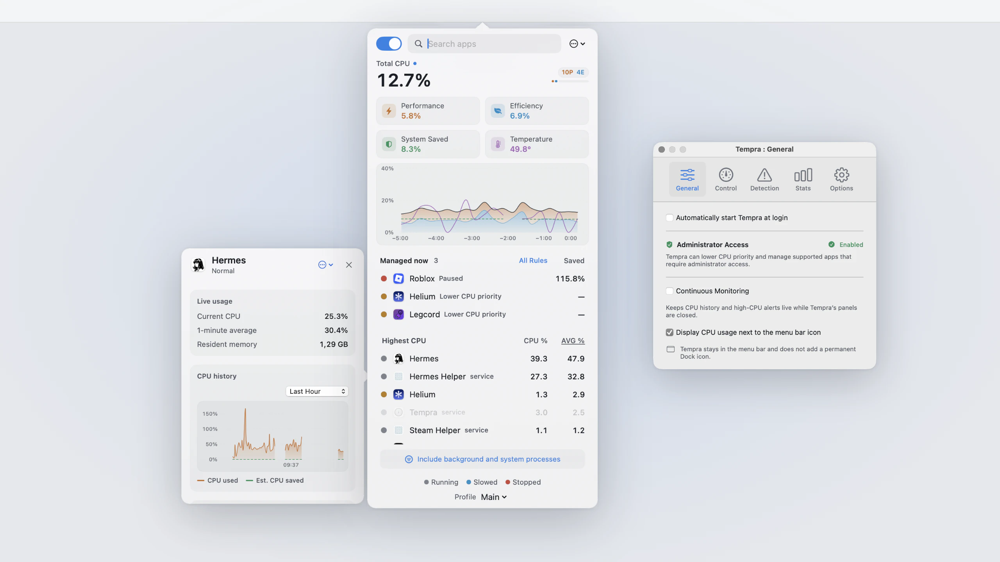
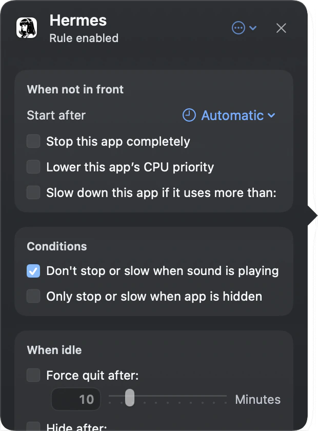
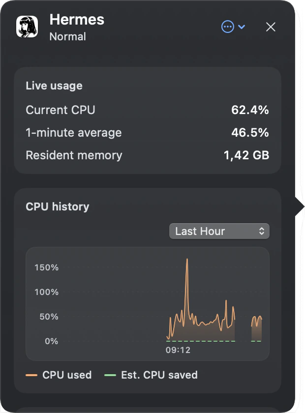

Slow it down
Hold an app to a CPU limit, anywhere from one percent of a single core up to the whole machine.
Free and open source · GPL-3.0 · macOS 14.2+
Tempra is a menu bar app that slows down, pauses, or deprioritizes apps while you are not using them, and gives them back the moment you switch back.
Download the latest DMG Read the source

Chrome with forty tabs, a game you alt-tabbed out of, an Electron chat app: they all keep burning CPU after you stop looking at them. Fans spin up, the battery drains, and the app you are actually using gets slower. macOS gives you no control over this.
Tempra watches which app is in front and applies a rule you set to everything else. When you come back to an app, it is running at full speed before the window finishes appearing.
Pick an app and choose what happens when it leaves the front.
Hold an app to a CPU limit, anywhere from one percent of a single core up to the whole machine.
Stop it outright. It resumes when you switch back, with its state intact.
Let macOS schedule it on the efficiency cores, with or without a limit on top.
After it has sat in the background for as long as you decide.
You choose when a rule starts: immediately, after a delay, or only once the app is hidden. Tempra holds off while an app is playing audio, so your music does not stutter because Spotify lost focus. Rules are saved per app, and profiles hold a second set of limits, for instance a stricter one on battery, switched by hand or by power source or idle time.
The panel doubles as a small activity monitor: total CPU split across performance and efficiency cores, per-app CPU with a one-minute average, CPU temperature read from the SMC without root, and up to twenty-four hours of history.


Stopping other people's processes is the kind of thing that goes wrong at the worst moment, so most of the code is about the failure cases.
Before Tempra pauses anything, a separate guardian process writes the target's process ID and start time to a journal on disk and confirms the write. Only then does the stop signal go out. The guardian holds a five-second lease that Tempra renews every second. If Tempra crashes, hangs, or is killed outright, the lease expires and the guardian resumes everything in its journal. If the guardian itself dies, launchd restarts it and it resumes everything before accepting new work. Resume signals are only sent when the process ID and start time still match, so a reused process ID never receives a stray signal.
Some things are never touched: WindowServer, Finder, Dock, SystemUIServer, loginwindow, WindowManager, and the audio components of apps that route system sound. They appear in the list so you can see their CPU, but no rule applies to them.
If Tempra cannot restore every managed process on quit, it refuses to quit quietly and tells you why, with a Quit Anyway that still hands the cleanup to the guardian.
Lowering an app's CPU priority and managing processes owned by other users need an administrator helper. Setup offers to install it, and you can add or remove it later in Settings. Everything else works without it.
Tempra is not on the Mac App Store. Pausing and reprioritizing other processes needs system-level behaviour that App Store sandboxing does not permit.
Tempra is built and maintained in the open by AxxzyWasTaken. Every line that touches your processes lives in the repository under the GPL-3.0, alongside the full test suite and the release history. That is deliberate: a utility that suspends your processes should be one you can audit rather than one you have to trust.